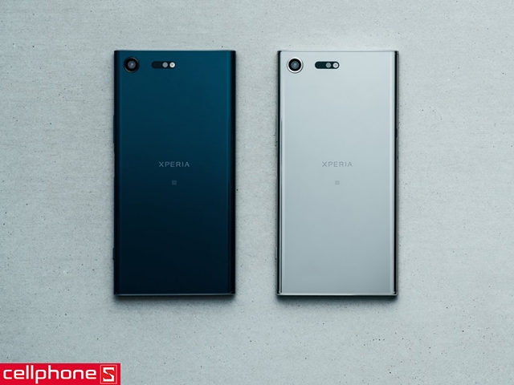
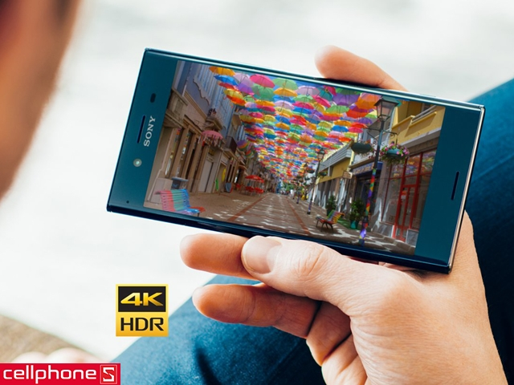
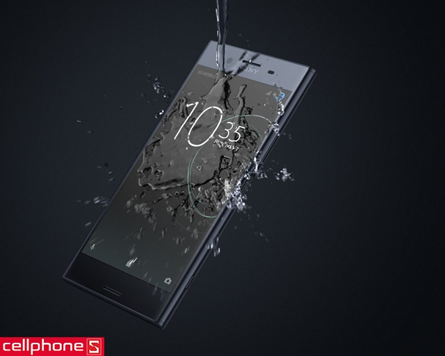
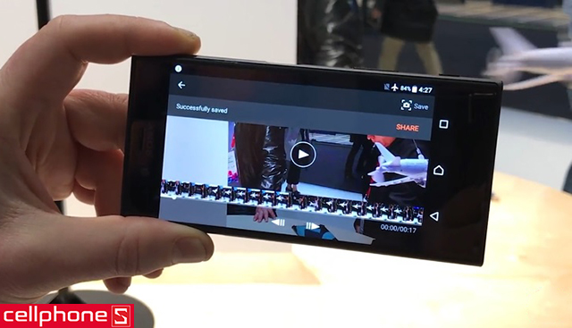
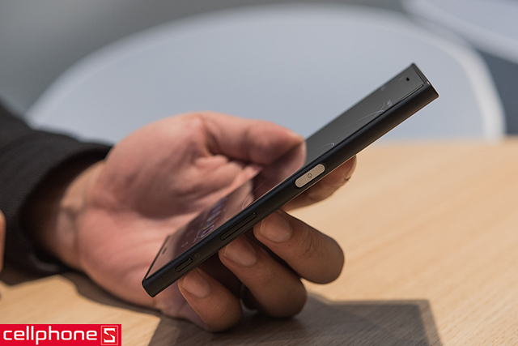
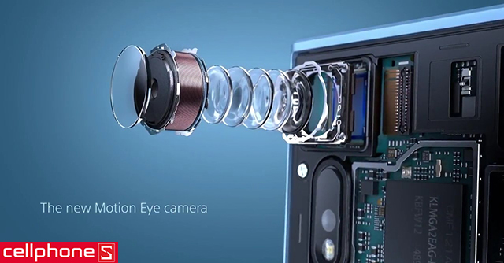
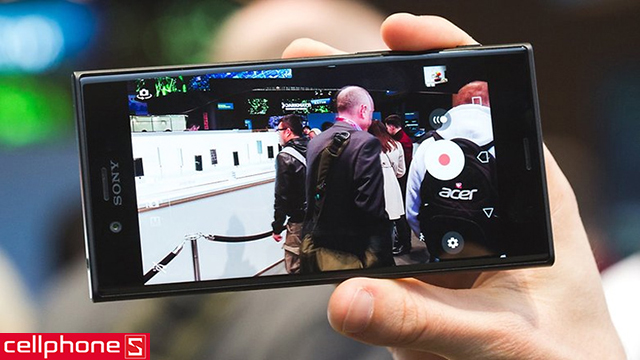

Tìm Kiếm
VuongDiQuyen.com

Giá : 16.999.000Đ
1 căn hộ
1 trà sữa trân châu
1 card điện thoai 20.000
nhanh tay...!!!
Tại triển lãm di động di động toàn cầu diễn ra ở Barcelona cuối tháng 2 – đầu tháng 3/2017, Sony đã gây bất ngờ cho giới công nghệ khi trình làng chiếc Xperia XZ Premium với màn hình 4K HDR đầu tiên trên thế giới, qua đó nhận được giải thưởng “smartphone mới xuất sắc nhất” do ban tổ chức triển lãm trao tặng.
Thiết kế Sony Xperia XZ Premium – Đỉnh cao của thiết kế smartphone
Xperia XZ Premium thừa hưởng thiết kế khung kim loại kết hợp 2 mặt kính đã có từ Xperia XZ, nhưng phần kính được nâng cấp lên Gorilla Glass 5 cho độ bền tốt hơn

Đồng thời, mặt lưng máy được làm bóng loáng, cho cảm giác như đang nhìn vào một tấm gương rất độc đáo và quyến rũ.
Màn hình Sony Xperia XZ Premium: siêu nét với độ phân giải 4K, hỗ trợ HDR
Trước đây, hãng điện thoại Sony đã giới thiệu Z5 Premium, chiếc smartphone đầu tiên sở hữu màn hình 4K và bây giờ, hãng điện tử Nhật Bản tiếp tục đi tiên phong về công nghệ màn hình.

Cụ thể, Xperia XZ Premium cũng có màn hình 4K nhưng nó còn hỗ trợ thêm tiêu chuẩn HDR với độ sáng cao hơn Z5 Premium đến 40%, kết hợp với 2 công nghệ nổi tiếng của Sony là Triluminos và X-Reality cho khả năng hiển thị hình ảnh siêu nét.
Sony Xperia XZ Premium có khả năng chống nước

Người dùng có thể tự tin mang Xperia XZ Premium vào nhà tắm, nghe điện thoại dưới trời mưa hoặc quay phim – chụp ảnh dưới hồ bơi vì chiếc smartphone của Sony được tích hợp công nghệ chống bụi – chống nước theo tiêu chuẩn IP68, chuẩn bảo vệ cao nhất.
Sony Xperia XZ Premium được trang bị cấu hình cực mạnh
Flagship đến từ Sony sử dụng vi xử lý Qualcomm Snapdragon 835 tám nhân, RAM 4GB mang lại hiệu năng mạnh mẽ.

Mọi thao tác xử lý ứng dụng cũng như chạy đa nhiệm đều được máy phản hồi với tốc độ nhanh đến kinh ngạc. Bên cạnh đó, bộ nhớ trong của thiết bị là 64GB (hỗ trợ mở rộng bằng thẻ nhớ thêm 256GB) giúp người dùng lưu trữ được nhiều dữ liệu.
Sony Xperia XZ Premium có viên pin lớn, cổng USB Type C, sạc nhanh và cảm biến vân tay
Sony Xperia XZ Premium được trang bị viên pin dung lượng 3230 mAh cho thời lượng sử dụng ấn tượng. Thiết bị dùng cáp USB Type C (cắm được theo cả hai chiều) để sạc, kết hợp với công nghệ Quick Charge 3.0 của Qualcomm giúp người dùng nạp đầy năng lượng cho máy một cách nhanh chóng.

Ngoài ra, Xperia XZ Premium cũng được tích hợp cảm biến vân tay vào nút home ở cạnh phải nhằm nâng cao khả năng bảo mật.
Camera Sony Xperia XZ Premium mang nhiều nét đột phá lớn

Bên cạnh màn hình 4K HDR, Sony tiếp tục đi tiên phong về camera khi XZ Premium là chiếc smartphone đầu tiên trên thế giới trang bị cảm biến camera với khả năng quay phim slow-motion 960fps, chậm hơn đến 4 lần so với những thiết bị quay slow-motion tốt nhất vào thời điểm chiếc máy này được ra mắt. Trong khi đó, camera trước của XZ Premium cũng sở hữu độ phân giải lên đến 13MP đi kèm khẩu độ lớn (f/2.0) đáp ứng tốt nhu cầu chụp selfie của người dùng.

Với thiết kế sang trọng, hiệu năng mạnh mẽ, màn hình 4K siêu nét và camera chất lượng, Sony Xperia XZ Premium chính hãng là chiếc smartphone cao cấp rất đáng để sở hữu.
3G: HSPA 42.2/5.76 Mbps
4G: LTE-A (3CA) Cat16 1024/150 Mbps
SIM: 2 SIM (Nano-SIM)
Kích thước: 148.9 x 68.1 x 8.0 mm (5.86 x 2.68 x 0.31 in)
Trọng lượng: 155 g (5.47 oz)
Màn hình: Cảm ứng điện dung IPS LCD, 16 triệu màu
Kích thước màn hình: 3840 x 2160 pixels, 5.46 inches (~807 ppi mật độ điểm ảnh)
Bộ nhớ trong: 64 GB, 4 GB RAM
Khe cắm thẻ nhớ: microSD, lên đến 256 GB
WLAN: Wi-Fi 802.11 a/b/g/n/ac, dual-band, Wi-Fi Direct, hotspot
Bluetooth: v5.0, A2DP, LE, aptX
USB: v3.1, Type-C 1.0
NFC: Có
GPS: A-GPS, GLONASS, BDS, GALILEO
Hệ điều hành: Android OS, v7.1 (Nougat)
Chipset: Qualcomm MSM8998 Snapdragon 835
CPU: 4x 2.3 GHz M2 Mongoose & 4x 1.7 GHzCortex-A53
GPU: Adreno 540
Bộ cảm biến: Mống mắt, vân tay, gia tốc, con quay hồi chuyển, khoảng cách, la bàn, phong vũ biểu, nhịp tim, SpO2
Camera chính: 12 MP, f/1.7, 26mm, tự động lấy nét nhận diện theo giai đoạn, OIS, LED flash
Camera phụ: 8 MP, f/1.7, tự động lấy nét, gọi video kép, HDR tự dộng
Video: 2160p@60fps, 1080p@120fps, HDR, quay video kép
Pin: Li-Ion 3230 mAh
Thời gian đàm thoại: -
Thời gian chờ: -
Thời gian chơi nhạc: -


Liên Hệ
trụ sở chính: Redmond, Washington, Hoa Kỳ
phone: 123456789
Góp Ý
email:anhhungxadieu@gmail.com
Đối Tác
điện máy đỏ
thới giới vận động
viên thông B